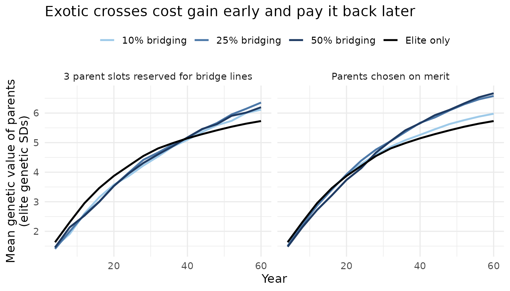
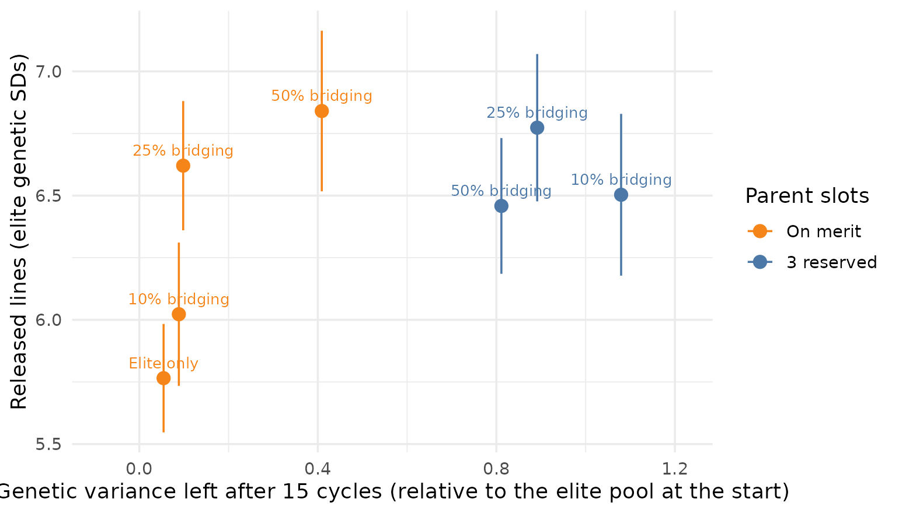

How much of the program should go to exotic germplasm?
Source:vignettes/articles/introgression.Rmd
introgression.RmdElite programs narrow over time. Each cycle crosses the best lines with each other, and alleles that are not in those lines are lost for good. Exotic germplasm, such as wild soybean (Glycine soja) or old landraces, still carries some of that lost variation. It is also far worse for yield, so every cross to it costs gain now in the hope of gain later.
Most programs handle this with bridging crosses: cross an elite line to an exotic, backcross once to elite, select among the progeny, and let only the best enter the elite crossing block. That raises two design questions:
- What share of the crosses should be bridging crosses?
- Should bridge-derived lines compete with elite lines for parent slots on merit, or get a few reserved slots so their diversity survives early selection?
This is a long-term question, so it needs many cycles and a fair
number of replicates. It also needs a custom program, which is what
alphasim_program() is for.
The program
Each replicate starts by making an elite pool. Half of the founders go through eight generations of selection, which raises their mean but uses up much of their genetic variance. The other half stay unselected and play the exotic accessions. Gains are measured from the elite pool’s starting point, in its own genetic standard deviations.
Every cycle then makes 40 crosses. A share bridge_share
of them are bridging crosses (elite × exotic, then one backcross to an
elite parent), and the rest are elite × elite. All lines are advanced
three generations and phenotyped in two reps. Then 15 parents are chosen
for the next cycle, either all on merit (reserved = 0) or
with reserved slots kept for the best bridge-derived lines.
The number of crosses is the same for every design, so every design has
the same budget.
program <- function(founders, SP, bridge_share, reserved, n_crosses = 40, per_cross = 10,
n_parents = 15, burn_in = 8, cycles = 15) {
# An elite pool narrowed by earlier selection, and unselected exotic accessions.
elite <- founders[1:30]
exotic <- founders[31:60]
for (g in seq_len(burn_in)) {
elite <- selectInd(setPheno(elite), 10)
elite <- self(randCross(elite, nCrosses = 30, nProgeny = 2))
}
elite <- self(self(elite))
tracker <- asr_tracker(elite)
parents <- selectInd(setPheno(elite, reps = 4), n_parents)
for (cycle in seq_len(cycles)) {
n_bridge <- round(bridge_share * n_crosses)
lines <- self(randCross(parents, nCrosses = n_crosses - n_bridge), nProgeny = per_cross)
lines <- setPheno(self(self(lines)), reps = 2)
if (n_bridge > 0) {
# Elite x exotic, then one backcross to an elite parent.
f1 <- hybridCross(parents, exotic, crossPlan = cbind(sample(nInd(parents), n_bridge, TRUE),
sample(nInd(exotic), n_bridge, TRUE)))
bc1 <- hybridCross(f1, parents, crossPlan = cbind(seq_len(n_bridge),
sample(nInd(parents), n_bridge, TRUE)))
bridge <- setPheno(self(self(self(bc1, nProgeny = per_cross))), reps = 2)
parents <- if (reserved > 0) {
c(selectInd(lines, n_parents - reserved), selectInd(bridge, reserved))
} else {
selectInd(c(lines, bridge), n_parents)
}
} else {
parents <- selectInd(lines, n_parents)
}
tracker$record(parents, year = cycle * 4, released_lines = selectInd(parents, 3))
}
asr_summary(tracker)
}The designs are no bridging, then 10%, 25% or 50% bridging crosses, with or without three reserved parent slots:
spec <- alphasim_program(program, bridge_share = tune(), reserved = tune(),
founders = asr_founders(n_founders = 60, n_chr = 10, seg_sites = 150, qtl_per_chr = 15))
designs <- rbind(data.frame(bridge_share = 0, reserved = 0),
expand.grid(bridge_share = c(0.1, 0.25, 0.5), reserved = c(0, 3)))
res <- tune_grid(spec, sim_replicates(20, seed = 1), grid = designs,
metrics = sim_metric_set(release_gain, genetic_variance),
control = control_sim(save_outcomes = TRUE))Short term against long term
traj <- collect_trajectories(res)
avg <- aggregate(mean ~ bridge_share + reserved + year, data = traj, FUN = mean)
avg$design <- ifelse(avg$bridge_share == 0, "Elite only",
paste0(100 * avg$bridge_share, "% bridging"))
avg$slots <- ifelse(avg$reserved == 0, "Parents chosen on merit", "3 parent slots reserved for bridge lines")
elite_only <- avg[avg$bridge_share == 0, ]
plot_data <- rbind(avg[avg$bridge_share > 0, ],
transform(elite_only, slots = "Parents chosen on merit"),
transform(elite_only, slots = "3 parent slots reserved for bridge lines"))
ggplot(plot_data, aes(year, mean, colour = design)) +
geom_line(linewidth = 0.9) +
facet_wrap(~slots) +
scale_colour_manual(values = c("Elite only" = "black", "10% bridging" = "#9ECAE9",
"25% bridging" = "#4C78A8", "50% bridging" = "#1F3B63")) +
labs(x = "Year", y = "Mean genetic value of parents\n(elite genetic SDs)", colour = NULL,
title = "Exotic crosses cost gain early and pay it back later") +
theme(legend.position = "top")
Zoom in on the first and last cycles to see the trade:
first_last <- avg[avg$year %in% c(4, 60), ]
first_last <- reshape(first_last[, c("design", "slots", "year", "mean")], idvar = c("design", "slots"),
timevar = "year", direction = "wide")
names(first_last)[3:4] <- c("after_1_cycle", "after_15_cycles")
first_last[order(first_last$slots, first_last$design), ]
#> design slots after_1_cycle
#> 5 10% bridging 3 parent slots reserved for bridge lines 1.472321
#> 6 25% bridging 3 parent slots reserved for bridge lines 1.405651
#> 7 50% bridging 3 parent slots reserved for bridge lines 1.453943
#> 2 10% bridging Parents chosen on merit 1.642630
#> 3 25% bridging Parents chosen on merit 1.505413
#> 4 50% bridging Parents chosen on merit 1.478676
#> 1 Elite only Parents chosen on merit 1.629819
#> after_15_cycles
#> 5 6.113732
#> 6 6.354476
#> 7 6.195696
#> 2 5.977432
#> 3 6.577713
#> 4 6.668520
#> 1 5.729941- Bridging costs gain at first. After one cycle, the programs with 50% bridging are about a sixth of a standard deviation behind. The 10% programs lose little or nothing.
- The elite-only program runs out of steam. Its gain per cycle slows as its genetic variance is used up. Bridging programs that choose parents on merit pass it after about 25 to 30 years (seven cycles), and those with reserved slots after about 40.
- After 15 cycles every bridging design is ahead. Because the designs share seeds, the comparison is paired. Here is the difference between the elite-only program and 50% bridging on merit:
m <- collect_metrics(res, type = "wide")
m$design <- ifelse(m$bridge_share == 0, "Elite only", paste0(100 * m$bridge_share, "% bridging"))
cfg <- function(share, slots) m$.config[m$bridge_share == share & m$reserved == slots]
compare_designs(res, cfg(0, 0), cfg(0.5, 0), metric = "release_gain")
#> # A tibble: 1 × 7
#> .metric a b mean_difference std_err n p_b_worse
#> <chr> <chr> <chr> <dbl> <dbl> <int> <dbl>
#> 1 release_gain Config001 Config004 1.08 0.294 20 0.999What the reserved slots buy
Chosen on merit, 25% or 50% bridging ends up ahead of 10%. With reserved slots the share of bridging crosses matters less, and the slots make a different difference: the diversity that is left.
ggplot(m, aes(genetic_variance, release_gain, colour = factor(reserved), label = design)) +
geom_errorbar(aes(ymin = release_gain - release_gain_se, ymax = release_gain + release_gain_se), width = 0) +
geom_point(size = 3) +
geom_text(vjust = -0.9, size = 3, show.legend = FALSE) +
scale_colour_manual(values = c("0" = "#F58518", "3" = "#4C78A8"), labels = c("On merit", "3 reserved")) +
scale_x_continuous(expand = expansion(mult = 0.2)) +
labs(x = "Genetic variance left after 15 cycles (relative to the elite pool at the start)",
y = "Released lines (elite genetic SDs)", colour = "Parent slots")
When bridge lines compete on merit, few of them make it into the crossing block. With 10% or 25% bridging the program ends up nearly as narrow as the elite-only one, and even 50% keeps less than half the starting variance. With three slots kept for them, the program finishes with about as much genetic variance as it started with (0.8 to 1.1 times), at gains close to the best on merit. That is room for the next decades of selection, and the simulation says it costs little here.
Caveats, and making it yours
This model is generous to the exotics. They come from the same founder population as the elite pool and differ only by not having been selected. Real wild soybean carries many alleles that are bad in a cultivated background, such as vining, pod shattering and small seed, so bridging costs more and pays back more slowly. Ways to make the study closer to your program:
-
Make the exotics worse. Use a
setupfunction inasr_founders()to build two populations, or select the exotic half against yield for a few generations during the burn-in. - Add a pre-breeding stage. Run bridge lines through two or three cycles of their own selection before they can enter the elite block, and tune its length.
-
Use your own germplasm. Load marker data for your
elite lines and accessions with
asr_founders(haplotypes = ). -
Tune more of the balance. Make
reserved, the backcross generations and the share of the budget alltune()arguments, and search them withtune_bayes()with a constraint ongenetic_variance.